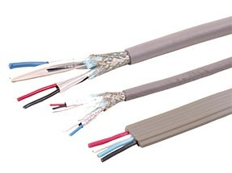
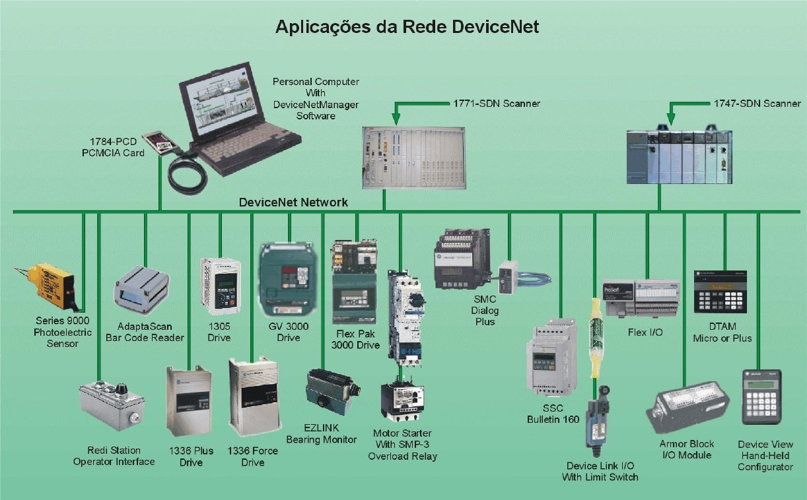

DEVICENET
ESTRUTURA FÍSICA E CABEAMENTO
DEVICENET EM SISTEMAS DE AUTOMAÇÃO INDUSTRIAL
A DeviceNet é uma tecnologia de comunicação industrial utilizada para interligar controladores, módulos de entradas e saídas, sensores, atuadores, partidas de motores, válvulas e outros dispositivos de campo. Sua aplicação deve considerar a infraestrutura física, o comportamento de transmissão, os requisitos de tempo e a integração com os dispositivos e controladores do processo.
A tecnologia foi desenvolvida sobre o barramento CAN e utiliza o Common Industrial Protocol (CIP) nas camadas superiores. Essa combinação permite transportar dados de controle, configuração e diagnóstico em uma mesma rede, reduzindo a quantidade de cabeamento individual entre o controlador e os equipamentos de campo (ODVA, 2021).
MEIOS FÍSICOS E CABOS ADOTADOS
A DeviceNet utiliza um cabo industrial próprio, normalmente formado por cinco condutores: um par trançado para comunicação, outro par para alimentação em corrente contínua e um condutor de dreno associado à blindagem. A separação dos pares permite transmitir dados e distribuir energia pelo mesmo conjunto de cabo, sem utilizar os mesmos condutores para as duas funções.
- Par de comunicação: os condutores branco (CAN_H) e azul (CAN_L) formam o par diferencial utilizado pelo barramento CAN.
- Par de alimentação: os condutores vermelho (V+) e preto (V-) distribuem, tipicamente, 24 Vcc aos dispositivos. A corrente permitida depende da seção e do tipo de cabo, do comprimento e das condições de instalação.
- Blindagem e dreno: a blindagem metálica e o condutor de dreno ajudam a reduzir interferências eletromagnéticas. O cabo deve ser selecionado conforme o ambiente, a flexibilidade exigida e a corrente dos dispositivos.
- Tipos de cabo: são utilizados cabos redondos grossos (thick), finos (thin) e cabos planos (flat). Os cabos grossos são normalmente aplicados como linha tronco em segmentos mais longos; os finos podem ser usados em ramais e derivações; e os planos permitem derivações por conectores de perfuração de isolamento (ODVA, 2021).

CONECTORES PADRONIZADOS E IDENTIFICAÇÃO
- Conectores de borne/parafuso: utilizados em instalações com ligação fixa ou em dispositivos com grau de proteção mais baixo, incluindo soluções IP20.
- Conectores Mini e Micro: conectores circulares industriais pré-moldados, com versões destinadas a ambientes que exigem maior proteção mecânica e contra ingresso de poeira e água, incluindo modelos IP67. A escolha depende da corrente, do tipo de cabo e do equipamento.
- Conectores para cabo plano: utilizados para fazer derivações no cabo flat, frequentemente por contato de deslocamento de isolação (IDC), mantendo a continuidade da linha tronco.
A identificação dos fios deve respeitar a convenção do sistema DeviceNet: branco para CAN_H, azul para CAN_L, vermelho para V+, preto para V- e dreno/blindagem para a referência de proteção. A pinagem e o tipo de conector devem ser conferidos no manual do fabricante (ODVA, 2003).
TOPOLOGIAS SUPORTADAS
TOPOLOGIA TRONCO-DERIVAÇÃO (TRUNKLINE-DROPLINE)
A topologia característica da DeviceNet é a tronco-derivação. Um cabo principal (tronco) percorre a instalação e recebe derivações (drops) que conectam os nós. As derivações podem ser individuais ou utilizar conectores de múltiplas portas, desde que os limites de comprimento e de corrente sejam respeitados.
- Terminação do barramento: devem ser instalados resistores de terminação apropriados nas duas extremidades do tronco, tipicamente de 121 ohms, ligados entre CAN_H e CAN_L. A terminação reduz reflexões e deve ser posicionada nas extremidades elétricas da linha, não em cada ramal.
- Limites dos ramais: cada derivação individual possui comprimento máximo de 6 m. O comprimento acumulado das derivações também é limitado e varia conforme a taxa de transmissão.
- Expansão da rede: a topologia admite derivações e pontos de alimentação distribuídos, mas não deve ser convertida livremente em estrela com ramais longos, pois isso pode comprometer a integridade do sinal (ODVA, 2021).

INTERFACE ELÉTRICA E TRANSMISSÃO DE SINAIS
SINALIZAÇÃO E NÍVEIS ELÉTRICOS DO BARRAMENTO CAN
A comunicação utiliza sinalização diferencial no par CAN_H/CAN_L. O receptor interpreta a diferença de tensão entre os dois condutores, e não um nível isolado em relação ao terra. Essa característica melhora a rejeição a ruídos que afetam os dois fios de maneira semelhante.
- Estados lógicos: o barramento CAN utiliza os estados dominante e recessivo. O estado dominante representa o bit lógico 0 e prevalece sobre o recessivo, associado ao bit lógico 1, quando dois ou mais nós transmitem simultaneamente.
- Transmissão diferencial: a informação é representada pela condição elétrica entre CAN_H e CAN_L. A implementação física e os limites de tensão devem seguir as especificações CAN e o projeto do transceptor de cada equipamento.
- Alimentação em corrente contínua: a alimentação nominal do barramento é normalmente de 24 Vcc e utiliza o par V+/V-, separado do par de dados. Assim, energia e comunicação percorrem o mesmo cabo, mas por condutores distintos. A capacidade de corrente do tronco depende do cabo e pode chegar a 8 A em configurações compatíveis (ODVA, 2021).
ALIMENTAÇÃO PELO BARRAMENTO
Uma das principais características da DeviceNet é permitir alimentar dispositivos de campo e transmitir dados pelo mesmo cabo. Isso reduz a quantidade de cabos individuais e simplifica a instalação de sensores e atuadores de baixa potência. A fonte de 24 Vcc deve ser dimensionada considerando consumo total, queda de tensão, comprimento do tronco, derivações e limites de corrente do cabo.
- Alimentação externa: equipamentos de maior potência, como alguns acionamentos e válvulas, podem utilizar alimentação própria e consumir da DeviceNet apenas a comunicação. A interface física da rede deve manter a isolação exigida em relação aos circuitos internos do dispositivo.
- Distribuição de fontes: pontos de alimentação adicionais podem ser empregados quando previstos no projeto, respeitando as regras de referência, proteção e dimensionamento. Não se deve interligar fontes sem verificar a compatibilidade da instalação.
ISOLAÇÃO E PROTEÇÃO CONTRA RUÍDOS
- Isolação da interface: a camada física da DeviceNet deve ser isolada opticamente em relação ao restante do dispositivo conforme as recomendações ODVA. Essa separação ajuda a proteger a eletrônica interna e permite compartilhar o barramento com equipamentos que possuem alimentação externa (ODVA, 2021).
- Blindagem e aterramento: a blindagem e o condutor de dreno devem ser instalados e aterrados conforme o manual de cabeamento e o projeto de compatibilidade eletromagnética. A continuidade da blindagem, a referência equipotencial e a prevenção de correntes indesejadas são fundamentais.
- Instalação industrial: o cabo de comunicação deve ser afastado de condutores de potência e de fontes intensas de interferência, com cruzamentos em ângulo próximo de 90 graus quando necessário. Fontes, dispositivos de proteção e derivações devem seguir as orientações dos fabricantes.
- Áreas classificadas: DeviceNet padrão não significa, por si só, que a instalação seja intrinsecamente segura. Em áreas classificadas, são necessários equipamentos, barreiras e métodos de proteção certificados para a zona e o grupo de gás/poeira aplicáveis.
PROTOCOLO DE ENLACE E ACESSO AO MEIO (MAC)
MÉTODO DE ACESSO AO MEIO
A DeviceNet utiliza a camada de enlace CAN, com detecção de portadora e arbitragem bit a bit não destrutiva. Os nós verificam o estado do barramento antes de transmitir. Se mais de um nó iniciar uma mensagem ao mesmo tempo, os identificadores participam da arbitragem e apenas a mensagem de maior prioridade continua, sem que o quadro vencedor seja corrompido.
- Arbitragem por prioridade: durante o campo de arbitragem, um nó que transmite um bit recessivo e observa um bit dominante interrompe sua transmissão e passa a receber. Em identificadores CAN padrão de 11 bits, o identificador numericamente menor possui maior prioridade.
- Acesso compartilhado: todos os nós compartilham o mesmo barramento físico. O mecanismo CAN coordena o acesso sem colisões destrutivas, mas a espera de mensagens de prioridade menor depende do tráfego e das prioridades configuradas.
ESTRUTURA DO QUADRO E MENSAGEM
A DeviceNet utiliza principalmente o quadro de dados CAN. A estrutura contém campos de sincronização, arbitragem, controle, dados, verificação de erros e encerramento. O identificador de 11 bits também participa da identificação e da prioridade da mensagem.
- Início e arbitragem: o quadro começa pelo Start of Frame e contém o campo de arbitragem, com identificador CAN de 11 bits e bit RTR. Esses campos permitem coordenar o acesso e indicar a prioridade.
- Controle e dados: o campo de controle informa o comprimento da carga útil. O campo de dados transporta de 0 a 8 bytes por quadro CAN clássico. Mensagens CIP maiores utilizam fragmentação em vários quadros sucessivos.
- Verificação e confirmação: o quadro inclui CRC de 15 bits, delimitadores, slot de ACK e campo End of Frame. O receptor verifica erros e confirma a recepção; o CAN também possui mecanismos de retransmissão e confinamento de falhas (ODVA, 2021).
- Mensagens CIP: mensagens explícitas são normalmente utilizadas em configuração, diagnóstico e solicitações de leitura/escrita não críticas em tempo. Mensagens implícitas, também chamadas I/O, transportam dados de processo em tempo real e podem operar por consulta, ciclo ou mudança de estado.
PARÂMETROS OPERACIONAIS E DESEMPENHO
TAXA DE TRANSMISSÃO
A DeviceNet oferece três taxas padronizadas: 125 kbit/s, 250 kbit/s e 500 kbit/s. A escolha influencia diretamente o comprimento permitido do tronco e das derivações. Taxas maiores permitem maior velocidade de atualização, mas reduzem a distância máxima suportada pelo segmento.
DISTÂNCIA MÁXIMA DOS SEGMENTOS
Os limites dependem do tipo de cabo e da taxa selecionada. Os valores abaixo representam os comprimentos máximos de rede indicados pela ODVA para as configurações de cabo correspondentes (ODVA, 2021):
- Cabo redondo grosso (thick): 500 m a 125 kbit/s; 250 m a 250 kbit/s; e 100 m a 500 kbit/s.
- Cabo redondo fino (thin): 100 m para 125, 250 e 500 kbit/s.
- Cabo plano (flat): 420 m a 125 kbit/s; 200 m a 250 kbit/s; e 75 m a 500 kbit/s.
- Derivações: comprimento máximo de cada drop de 6 m. O comprimento acumulado máximo é de 156 m a 125 kbit/s, 78 m a 250 kbit/s e 39 m a 500 kbit/s.
- Quantidade de nós: a rede suporta até 64 nós por segmento DeviceNet, considerando os limites de endereçamento e de projeto.
DETERMINISMO E TEMPO DE CICLO
Classificação: a DeviceNet pode ser determinística para a comunicação de I/O consultada em uma configuração definida, desde que a rede seja corretamente dimensionada e configurada.
Justificativa: a DeviceNet pode oferecer comportamento previsível para comunicação de entradas e saídas, desde que a rede seja corretamente dimensionada e configurada. O CAN possui arbitragem por prioridade e a ODVA descreve o modo de I/O consultado como determinístico para uma configuração definida.
Tempo de atualização: não é um valor universal: depende da taxa de bits, quantidade de nós, tamanho das mensagens, prioridade dos identificadores, tipo de conexão e carga total do barramento. Mensagens de prioridade menor podem aguardar enquanto mensagens prioritárias ocupam o meio.
NÍVEL NA PIRÂMIDE DA AUTOMAÇÃO
Classificação: a DeviceNet atua principalmente nos níveis de campo e de controle da pirâmide da automação.
Justificativa e aplicação: é utilizada para conectar sensores, atuadores, módulos de I/O e dispositivos inteligentes a CLPs e controladores. Sua função mais característica é a comunicação distribuída entre o controlador e os equipamentos instalados no chão de fábrica.